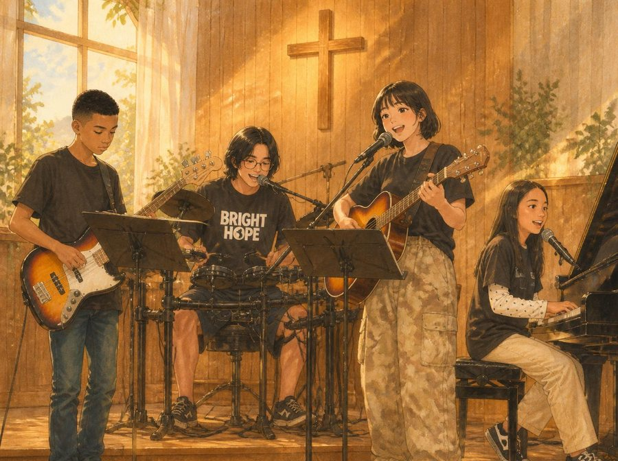
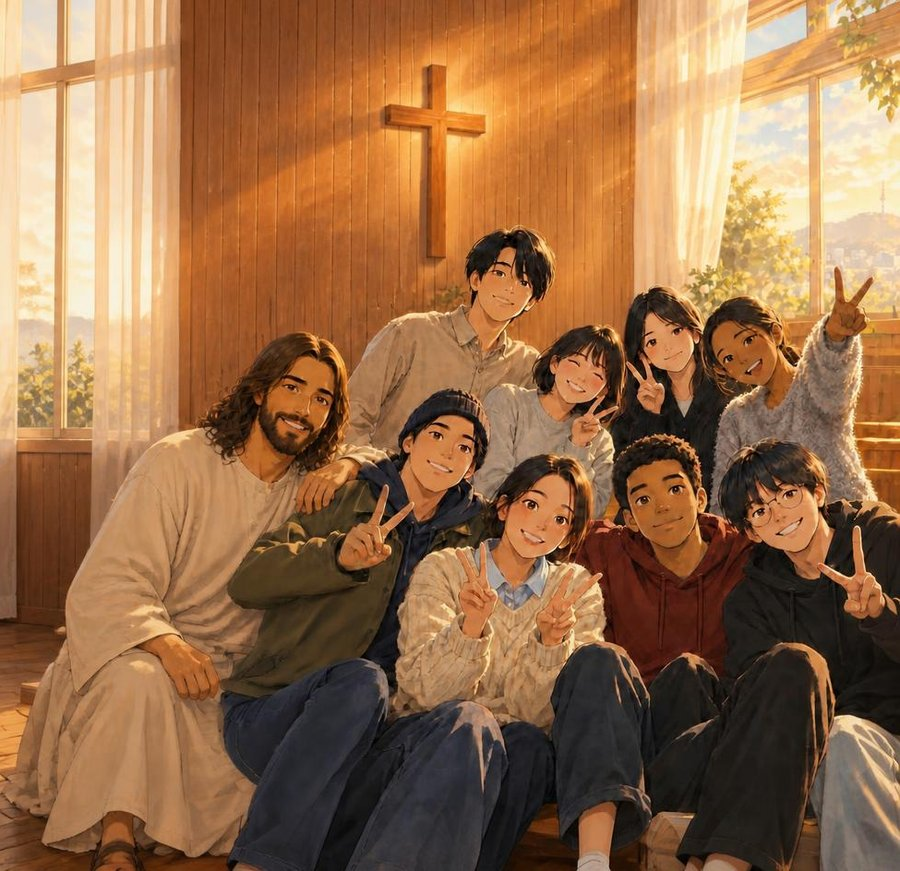
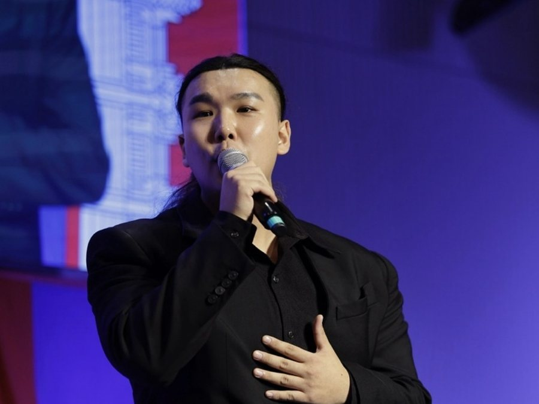

찬양과 간증
Bright Hope
후쿠오카 미즈타니의 후쿠오카그리스도교회에서 함께 예배드리는 청소년 찬양팀입니다. 크리스마스 특송을 계기로 활동을 시작해, 찬양 사역의 꿈을 품고 예수님을 노래하고 있습니다.

살아계신 주 예수 그리스도께 영광을 돌리고, 성령의 능력을 구하며, 한 사람 한 사람이 인격적인 하나님을 만나는 기쁨의 예배를 기대합니다. 그리고 일본과 그 땅에서 살아가는 영혼들, 일본의 교회와 예배를 위해 함께 마음을 모아 기도하길 원합니다.
일본은 그리스도인이 인구의 0.4%에도 미치지 못하는 나라입니다. 골목마다 신사와 절이 있지만 십자가를 찾기는 어렵고, 고령화로 교회에서 또래 친구를 만나기도 쉽지 않습니다.
이번에 부산을 찾는 브라이트호프와 워십네이션스의 청소년·청년들은 그 안에서도 "찬양으로 하나님을 예배하겠다"는 부르심을 품은 이들입니다.
11월 7일, 이들과 함께 손을 들고 살아계신 주님을 찬양해 주세요. 두 나라의 다음 세대가 예수 그리스도의 이름 앞에 함께 서는 이 시간이, 후쿠오카와 일본에서 오래도록 이어질 믿음의 불씨가 되기를 기도합니다. 이번 만남은 2027년 블레싱힐 페스티벌을 향한 첫걸음이기도 합니다.
이날 우리는 일본어로 찬양합니다. 일본에서 온 청소년·청년들은 자신의 언어로 마음껏 예배하고, 한국의 성도들은 낯선 일본어 가사로 함께 찬양하며 일본을 마음에 품습니다.
발음이 서툴러도 괜찮습니다. 이웃 나라의 언어로 드리는 찬양은 그 자체로 일본을 위한 기도가 됩니다.
부산에서 살아가는 일본인들에게는 모국어로 예배하는 귀한 자리가, 두 나라의 다음 세대에게는 함께 선교를 꿈꾸는 첫걸음이 되기를 기도합니다.

후쿠오카 미즈타니의 후쿠오카그리스도교회에서 함께 예배드리는 청소년 찬양팀입니다. 크리스마스 특송을 계기로 활동을 시작해, 찬양 사역의 꿈을 품고 예수님을 노래하고 있습니다.

동경사랑의교회를 섬기는 찬양사역자입니다. 도쿄기독교대학(TCU)에서 신학을 공부하며, 찬양으로 예수 그리스도를 전하고 있습니다. 찬양과 간증으로 함께합니다.
일본 상황에 맞는 선교 정책과 목회 전략을 연구하고, 팀 목회 등 구체적인 선교 프로그램을 개발하기 위해 세워진 초교파 선교 연구 기관입니다. 2015년 7월에 문을 열었고, 김대호 목사 등이 소장·대표로 섬기고 있습니다.
한국과 일본의 청소년·청년이 함께 모여 일본 복음화를 위해 교제하고 현지 교회를 섬기는 연합 캠프를 정기적으로 열며, 일본 선교의 특수성을 고려한 목회 전략 연구와 단기선교, 현지 교회 협력 사역을 이어 가고 있습니다.
갈라디아서 6장 14절 말씀을 약속의 말씀으로 붙잡고, 모든 예배와 사역 가운데 오직 예수님만 자랑하며 예수님의 흔적을 남기길 소망하는 공동체입니다.
매주 월요일 저녁 7시 30분 공동체 예배를 통해, 하나님의 말씀에 기초한 올바른 신앙 고백 위에 공동체를 세워 가고 있습니다.
음향으로 복음을 섬기는 사역입니다. 오래된 음향 장비로 어려움을 겪는 일본 교회를 찾아가 점검부터 교체·설치까지 돕고, 자체 음향 장비로 선교팀과 집회를 지원합니다.
교회와 단체를 잇는 선교의 다리로서 워십네이션스·브라이트호프와 연합해 사역하며, 블레싱힐 페스티벌의 이름도 이 사역에서 시작되었습니다. 이진우 선교사가 대표로 섬기고 있습니다.
후쿠오카 지역 교회들이 함께 예배하도록 돕는 지역 교회 연합 찬양 사역팀입니다. 2022년 연합 찬양집회로 시작해 2025년부터 2기 사역을 이어 가고 있습니다.
2026년 6월에는 블레싱힐 미니스트리, 브라이트호프와 협력해 후쿠오카 텐진 광장에서 한일 18개 팀이 함께한 블레싱힐 페스티벌을 주최했고, '10년은 후쿠오카, 10년은 일본 전국, 10년은 세계 선교'라는 30년 비전을 품고 있습니다.
일본어를 몰라도 괜찮아요. 처음 듣는 가사여도 우리는 같은 하나님을 찬양합니다.
이날 한국어와 일본어로 함께 부를 찬양을 고르고 있어요. 찬양팀이 미리 연습할 수 있도록 준비되는 대로 이곳에 올려 드립니다.
신청서에서 묻는 것 — 이름, 연락처, 소속 교회, 연령대, 함께 오는 인원. 일본어 수준과 찬양 파트는 선택으로, 일본 친구들과 만나는 시간에 조를 나눌 때만 참고합니다.
한국어·일본어 두 가지 신청서가 있어요. 가장 편한 언어로 신청해 주세요.
한국어 신청서 ↗ · 日本語 申込書 ↗
카카오톡 기도방에서 함께 기도해요더 세밀한 기도제목과 준비 소식을 나눕니다. 누구나 참여할 수 있어요.
기도방 참여하기일본 후쿠오카의 사역팀들이 부산에 와서 함께 예배하고 기도할 수 있도록, 물심양면으로 두 나라 다음 세대를 잇는 다리를 놓아 주시길 부탁드립니다.
일본에서 오는 사역팀 한 명이 부산에 와서 4박 5일 동안 함께 예배하는 데 드는 최소한의 항공·체류비입니다. 예배와 사역을 위한 발걸음에 여러분의 따뜻한 마음을 모아주세요.
전체 필요 예산 900만 원 · 작은 금액도 귀한 동역입니다
지난 6월 블레싱힐 페스티벌 후원금의 사용 내역을 모두 공개했고, 부족한 금액은 자비량으로 채웠습니다. 이번에도 집회 후 결산을 투명하게 보고드리겠습니다.
부산에서 시작되는 이 만남은 2027년, 후쿠오카 텐진의 블레싱힐 페스티벌로 이어집니다. 자세한 소식은 곧 전해 드릴게요.